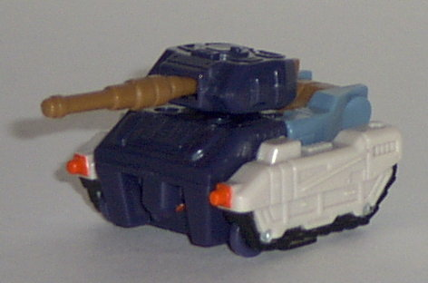
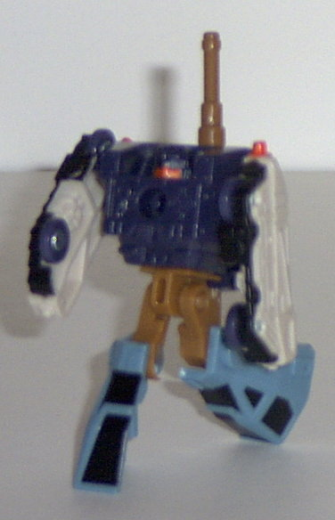
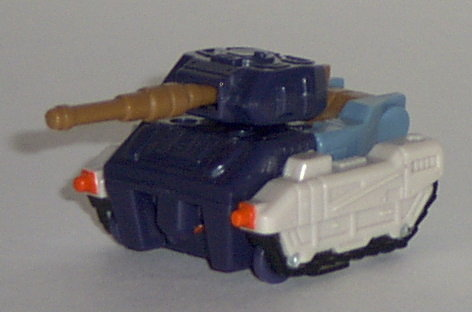
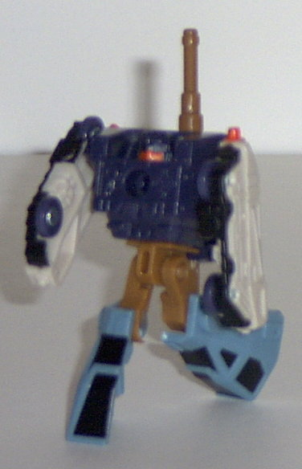
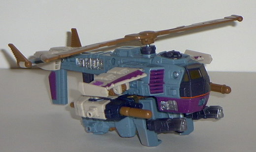
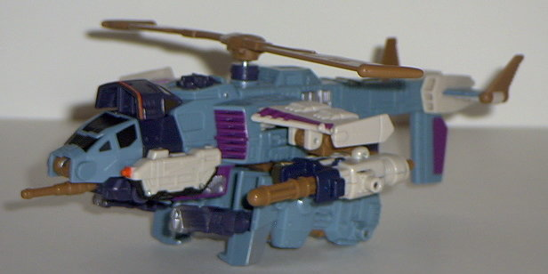
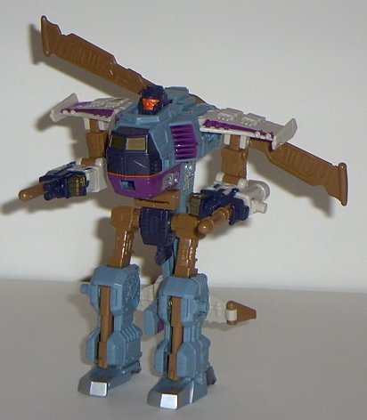
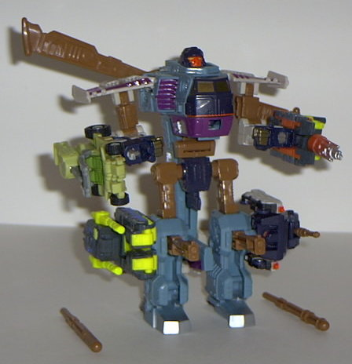
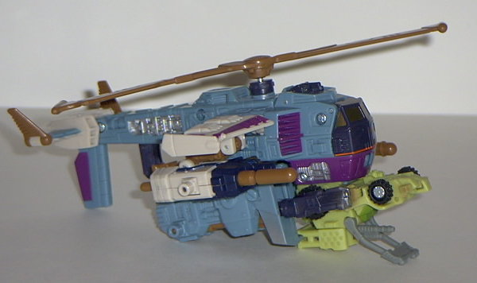
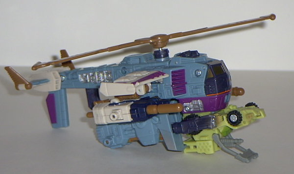

Crumplezone
Crumplezone
 
Allegiance : Minicon
Size : Mini-Con
Difficulty of Transformation : Very Easy
Color Scheme : Off-white, dark blue, sky blue, black, light brown, and some neon orange
Rating : 4.4
Crumplezone


Allegiance
: Minicon
Size
: Mini-Con
Difficulty of Transformation
: Very
Easy
Color Scheme
: Off-white, dark blue,
sky blue, black, light brown, and some neon orange
Rating
: 4.4
Vehicle mode is a tank.
This mode is pretty well done, if a bit "chibi"- it's a bit too wide when
compared to its length. The mold detailing is very nice, and although the
paint detailing is sparse, the colors are varied enough where you don't
really notice. Crumplezone has a "semi-gimmick" in this mode- if you push
on the tab on the back of his turret, the gun moves back and forth. Cute,
but a little weak. But hey, it's a Minicon, whadaya want? The Minicon port
is on the bottom of this mode, slightly to the front of center.
Crumplezone's robot
mode is bland and very unimaginative. Basically, to transform him you flip
his legs out and turn his waist. That's it. So his robot mode is pretty
boring- each main body part has something wrong with it. The arms are just
his treads, with little barely-noticeable fists molded about halfway down.
Um.. what about the REST of the arm pieces below the fists? Are we just
supposed to ignore that, or not? It's hard to imagine how he can use his
hands at all, really. As for the main body section, it's a bit TOO beefy
when compared with the rest of him (it makes him a little top-heavy), and
the head is just molded into the main body, rather than looking like a
separate piece. The legs, although nice appearance-wise, have hollow feet,
which makes it a little hard to stand up Crumplezone. At least he has decent
articulation, though- his shoulders, waist, hips, and knees can all move.
His Minicon symbol is on the left side of his chest.
Crumplezone is a boring
Minicon, with a boring transformation, and a boring robot mode, although
at least his tank mode is alright. Although his combining with Cyclonus
is cool (discussed below), as a stand-alone Minicon, he's pretty weak.
He has a cool name, though.
 Cyclonus
Cyclonus


Allegiance
: Decepticon
Size
: Super-Con
Difficulty of Transformation
: Easy
Color Scheme
: Sky blue, light brown,
off-white, dark blue, purple, silver, and some dull gold and neon orange
Powerlinx ports
: 4 (all gimmicked)
Rating
: 6.6
Vehicle mode is a futuristic helicopter. Although in this case, "futuristic" means "lazily put-together". I mean, I know that most of the Armada Decepticons are designed around their robot modes, not visa versa like most TFs, but come ON. His arms/fists could not possibly be more apparent- they're just hanging off of his wings, dwarfing them proportionally in the process. Cyclonus' legs are also very apparent- again, they're just hanging off of the bottom of the helicopter, with not even a landing gear put on the bottom to try to conceal them. At least guns fold out of the feet, but still... lazy. And the back of the robot head is pretty darn obvious on the top of the helicopter, too. This toy does have VERY good mold detailing, though, with mecha-stuff all over the place. The paint detaililng is also superb, on all places except for the Decepticon symbol, which is just a purple blob, like most of the other Armada allegiance symbols. Most people seem to have a problem with Cyclonus' color scheme, but I like it- the purples, blues, brown, and whites go together nearly flawlessly, and it's hard to think of a more fitting color scheme for a futuristic air vehicle. As for gimmicks, Cyclonus has got a ton of 'em- I'll discuss the non-Minicon-activated ones in this mode. The main one is his main rotor blade, which spins (albeit noisily) when you pull the trigger located near the rear of the helicopter. Also what's really cool is that you can attack Crumplezone to the front of Cyclonus, creating an "attack mode" that effectively makes ol' Cyc a different type of helicopter! Brilliant! In addition, you can also attack any member of the Adventure or Destruction Team (or their repaints), or Hoist's Minicon Refute to the bottom front of Cyclonus. (Pics of him attached to Drill Bit and Dune Runner are at the end of this review.) Then, when you pull the rotor trigger, not only does the rotor spin, but that Minicon's respective geared gimmick activates, too! Awesome! (This also makes Crumplezone's gun move back and forth, too, if he's combined with Cyclonus.) Definitely an ingenious idea, there.


Cyclonus' robot mode
is also blah. He just looks ugly- his chest sticks out too much and is
too circular, while he has this huge gap between it and his waist, which
is very skinny. His arms also don't "connect" to the rest of his body convincingly,
but just to his wings. And although the rotor on the back complements the
mode some, the tail just hangs off the back as an unsightly extra. It also
interferes with his leg movement quite a bit. I'm also not fond of Cyclonus'
face, which is fat and ugly- not only that, but it's neon orange! Eeeeww!
Cyclonus' articulation is pretty nice, although all of it is just back-and-forth,
and not any side-to-side, motion. His shoulders (at two points), elbows,
hips, and knees all have full motion, and his head and waist have limited
motion. As for gimmicks, again, Cyclonus has got plenty of them- in fact,
ALL of his Powerlinx ports are gimmicked. Attach a Minicon to either one
of his arm ports, and a missile shoots out- unfortunately, it shoots out
as SOON as you attach the missile, which is kinda stupid. You don't get
to aim with it or nothing, and you're more likely to shoot yourself than
whatever you want Cyclonus to aim at. The two leg ports, however, are kinda
cool- when activated, a gun pops of of Cyclonus' respective leg, for even
more added firepower.
Cyclonus is a perfect
example of one of the shortcomings of Armada, if taken to an extreme- Cyclonus
loses almost all of his "coolness" factor by looking unconvincing or misproportioned
in both modes, because of the sacrifices made to include a plethora of
gimmicks. In fact, he's the only Armada Decepticon that I'm not really
fond of. If you like a playable toy over one that looks good, pick him
up. Otherwise, pass and buy one of the many other Armada toys that manages
to incorporate both into it.
 

Review by Beastbot